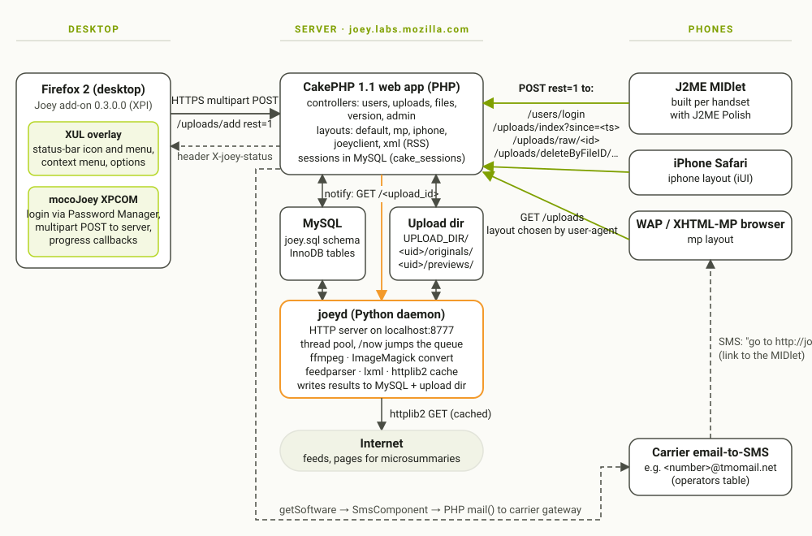
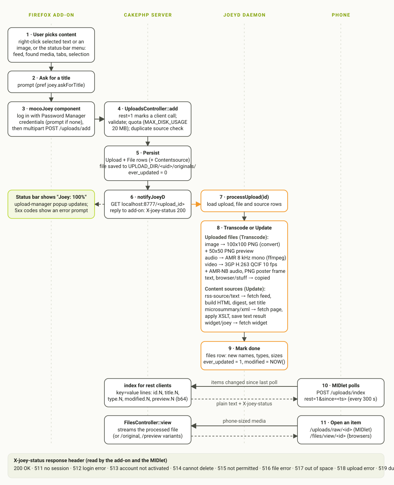
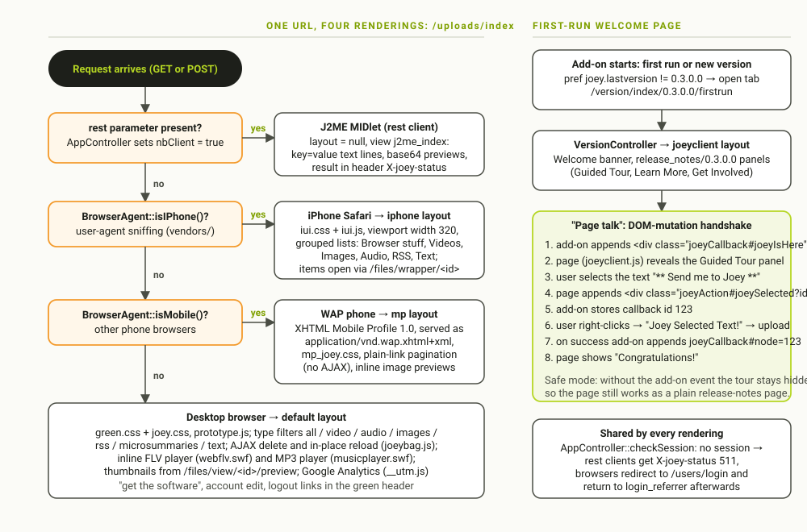
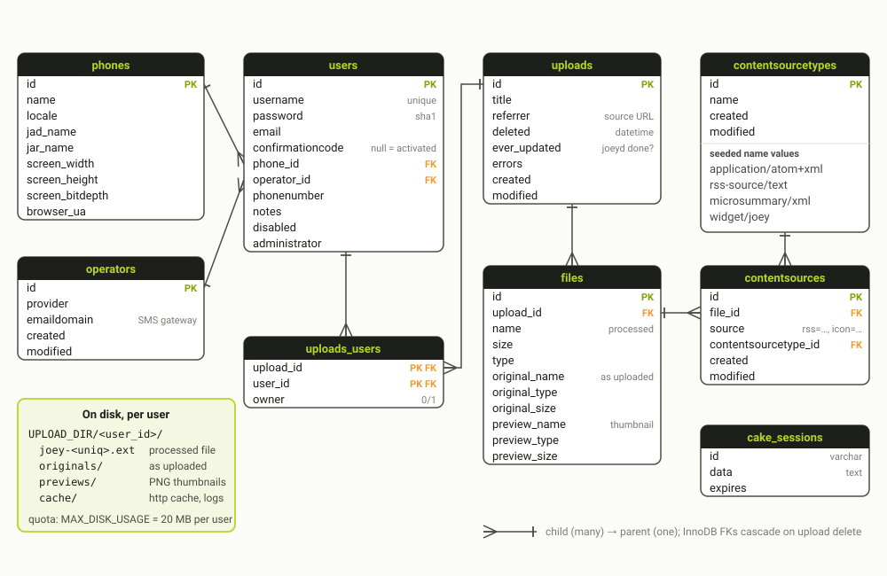

How it fits together
System architecture
Joey is three programs that agree on one HTTP protocol and one MySQL schema: a Firefox add-on that pushes things in, a PHP web application plus a Python daemon that stores and reshapes them, and a set of phone clients that pull them back out.
Three tiers, and why
In 2007 there was no app store to publish a phone application through, no shared mobile runtime beyond Java ME, and no reliable way to get a large file onto a handset except over the carrier's data network at the phone's own pace. The iPhone had shipped in June 2007 with a browser but no third-party SDK. Joey's shape follows from those constraints.

Firefox add-on
Lives where the user already is. Captures a selection, an image, a sniffed media stream, a feed, a page fragment, or the list of open tabs, and POSTs it to the server through an XPCOM component. It never talks to the phone.

Server + joeyd
A CakePHP 1.1 application owns accounts, sessions, uploads and the per-user quota. A separate Python daemon, joeyd, does the slow work: transcoding video to 3GP, audio to AMR, images to small PNGs, and refreshing feeds and microsummaries on a timer.
Phone clients
A Java ME midlet built per handset with J2ME Polish, a WAP-style XHTML-MP page for any phone browser, and an iUI web app for the iPhone. All three read the same upload list and the same files; the midlet speaks a tiny REST-ish dialect of it.

The split between the PHP app and joeyd is deliberate. A Firefox upload returns as soon as the original file is on disk and a row exists; the user sees "Joey hasn't processed this yet" in the web list until the daemon has run. Transcoding a video with ffmpeg could take longer than a PHP request should, and feeds need to be re-fetched long after the upload happened, so that work was moved to a process that outlives requests.
Source: server/app/controllers/uploads_controller.php, server/app/scripts/joeyd.py, addons/ff/components/mocoJoey.js, clients/j2me/source/src/org/mozilla/joey/j2me/CommunicationController.java
The content types Joey understands
Everything Joey moves is tagged with a MIME-style type. Some are real media types; others, such as rss-source/text, browser/stuff and microsummary/xml, are Joey's own inventions. The type decides which add-on code path produced the item, which branch of joeyd processes it, and what the phone eventually downloads.
| Type | Where the add-on produces it | What joeyd does | What the phone receives |
|---|---|---|---|
text/plain | "Joey Selected Text" context-menu item writes the selection to a temp file and uploads it. | Copies the original into place unchanged (_transcodeText). | The text, shown in a details view or the phone browser. |
image/png, image/jpeg, image/gif, image/tiff, image/bmp | "Joey Image" on a right-clicked image; the add-on fetches the bytes itself and uploads a file. | ImageMagick convert -geometry 100x100 for the main file and a 50x50 preview; both become PNG. Phone screen size is a TODO in the code. | A small PNG plus a thumbnail embedded in the midlet index. |
audio/x-wav, audio/mpeg, audio/mid, audio/amr | The HTTP response sniffer notices an audio stream and enables "Upload Joey Media"; the add-on downloads it and uploads a file. | ffmpeg to 8 kHz mono AMR at 7.4 kbit/s (_transcodeAudio). | audio/amr, the codec every GSM handset could play. |
video/3gpp, video/flv, video/mpeg, video/avi, video/quicktime | Same sniffer, video branch. Flash video from YouTube-era sites is the common case. | ffmpeg to QCIF H.263 at 10 fps with AMR-NB audio into a .3gp; a PNG frame grab at 5 seconds for the preview (_transcodeVideo). | A 3GP file served with a Content-Disposition filename so the phone's media player opens it. |
rss-source/text | joey_feed() uploads a two-line text body, rss=<url> and optional icon=<url>, as a content source rather than a file. Triggered by the feed watcher after the same feed has been seen ten times, or by /uploads/add/rss?source=. | Fetches the feed with httplib2 and parses it with feedparser. If the newest entry has an audio/mpeg enclosure the MP3 is downloaded and transcoded to AMR (podcast mode); otherwise the entries are rendered to an HTML digest. The upload title is replaced with the channel title. Re-run every 30 minutes. | Either an HTML digest (text/html) or an AMR audio file. |
microsummary/xml | "Joey Summary" turns the cursor into an element picker; clicking builds an XPath to the element and wraps it in a Firefox 2 microsummary generator document. | Fetches the page, parses it with lxml, evaluates the stored XPath and writes the matching element's HTML out. Re-run every 30 minutes, so the phone sees a live fragment of the page. | A small HTML fragment. |
browser/stuff | The optional tab uploader posts an HTML list of every open tab in every window as "Current Tabs" with referrer about:CurrentTabs. Default interval 5 minutes. | Copied through as text/html. The controller overwrites the previous original for the same type and referrer instead of creating a new upload, so there is one "Current Tabs" item per user. | A clickable list of links, labelled "Firefox stuff" on the iPhone view. |
widget/joey | Nothing in the add-on produces it. The type is seeded in contentsourcetypes and the uploads controller accepts it. | _updateJoeyWidgetTypeFromUploadData logs "type=widget..." and returns success. A placeholder. | Nothing usable. |
application/atom+xml | Seeded as content source type 1, never referenced by any client code. | Falls through to "Attempt to update unsupported type". | Nothing. |
Source: addons/ff/chrome/content/joey/joeyOverlay.js, server/app/controllers/uploads_controller.php ($filetypes), server/app/controllers/components/storage.php ($suffix), server/app/scripts/joeyd.py, server/app/config/sql/joey.sql
Upload lifecycle

- Capture. A menu item in Firefox builds a
joey_uploadobject with a title, the page URL as "referrer", a content type and either in-memory data or annsIFile. Unless the user has turned it off, a prompt lets them edit the title first. - Login. The
mocoJoeyXPCOM component looks the server up in the Firefox password manager, or prompts, then POSTsrest=1&data[User][username]=…to/users/login. Success is signalled by theX-joey-status: 200response header; the PHP session cookie carries the login from then on. - POST. The component sends a multipart form to
/uploads/addwithdata[Upload][title],data[Upload][referrer], therestflag and eitherdata[File][Upload](a file) ordata[Contentsource][source]plusdata[Contentsourcetype][name](a source such as a feed URL). - Store. For a file, the controller checks the quota, moves the upload into
UPLOAD_DIR/<user>/originals/joey-<uniqid>.<suffix>, and in one transaction inserts theuploadsrow, thefilesrow and theuploads_usersowner row. For a content source, a zero-length placeholder file is created and acontentsourcesrow points at it. Duplicate sources are detected by exact string match and reported as success ("we are going to lie and say that duplicate uploads are really successful"). - Notify.
notifyJoeyD()issuesGET http://localhost:8777/<upload_id>/nowwith a five-second connect timeout. The/nowsuffix puts the job at the front of joeyd's queue. - Process. A pool thread loads the upload's joined row, decides between
Transcode(there is no source) andUpdate(there is), runs ffmpeg or convert or a fetch, renames and retypes thefilesrow, records sizes, incrementsuploads.errorson failure, and finally setsever_updated = 1andmodified = NOW(). - Pull. The midlet polls
/uploads/index?rest=1&since=<unix time>on its own timer (default 300 seconds) and only sees rows whosemodifiedmoved, which is exactly what step 6 did. The web, WAP and iPhone views simply list the rows on each page load.
Source: addons/ff/components/mocoJoey.js, server/app/controllers/uploads_controller.php (add, _saveUploadedFile, _saveUploadedContentSource, notifyJoeyD), server/app/scripts/joeyd.py (processUpload, RequestHandler), clients/j2me/source/src/org/mozilla/joey/j2me/JoeyController.java
The wire protocol
One flag, two personalities
There is no separate API. Every controller action serves both the browser and the programmatic clients, and switches on a single request parameter. AppController::__construct sets $this->nbClient = true ("non-browser client") when rest appears in $_POST or $_GET. When it is set, actions stop rendering layouts and redirecting and instead answer with a status header and exit:
function returnJoeyStatusCode($statusCode)
{
header ("X-joey-status: " . $statusCode, true);
$this->layout = null;
exit;
}The HTTP status stays 200 either way; clients read X-joey-status. Both the XPCOM component and the midlet's CommunicationController do exactly that.
X-joey-status | Constant | Meaning |
|---|---|---|
| 200 | SUCCESS | OK |
| 511 | ERROR_NO_SESSION | No active session; log in first |
| 512 | ERROR_LOGIN | Unknown user or wrong password |
| 513 | ERROR_ACTIVATION | Account exists but the e-mail confirmation code is still set |
| 514 | ERROR_DELETE | Delete failed |
| 515 | ERROR_NOAUTH | Item belongs to another user |
| 516 | ERROR_FILE | File missing or unreadable on disk |
| 517 | ERROR_NO_SPACE | Upload would exceed the per-user quota |
| 518 | ERROR_UPLOAD | Generic upload or validation failure |
| 519 | ERROR_DUPLICATE | Identical content source already uploaded |
A successful login from a non-browser client also carries X-joey-version, the current midlet version read from webroot/ff/build.properties. The midlet compares it with its own and offers an update.
Endpoints the clients use
| Request | Who | Notes |
|---|---|---|
POST /users/loginrest=1&data[User][username]=u&data[User][password]=p | add-on, midlet | Username is lower-cased server side. Session cookie is moz_joey, stored in the cake_sessions table. |
POST /uploads/add (multipart) | add-on, midlet, web form | Fields: rest, data[Upload][title], data[Upload][referrer], and either data[File][Upload] or data[Contentsource][source] + data[Contentsourcetype][name]. The midlet's AddNetworkRequest builds this by hand for camera snapshots. |
GET /uploads/index?rest=1&limit=N&start=MGET /uploads/index?rest=1&since=T | midlet | Full index, or only rows modified since Unix time T. Deleted rows are included so the phone can purge its local cache. type= may also filter by the $filetypes group names (videos, audio, images, rss, microsummaries, text, browserstuff, all). |
GET /files/view/<file_id>…/original, …/preview | everyone | Streams the transcoded file, the original, or the preview image with the stored content type. Ownership is checked. If the file is unreadable, na.png is returned instead (and X-joey-status: 516 for programmatic clients). |
GET /files/wrapper/<file_id> | iPhone view | Returns a full-height <iframe> around /files/view, so iUI can slide to it as a page. |
POST /uploads/deleteByFileID/<file_id> rest=1 | midlet | Resolves the file to its upload and calls delete. |
GET /uploads/delete/<upload_id> | web (AJAX), WAP | Soft-deletes the upload, hard-deletes the files row and unlinks all three files. |
GET /uploads/rss | any feed reader | RSS 2.0 of your own uploads, rendered with the xml layout. |
GET /version/index/<version>[/firstrun] | add-on | Release notes page, opened in a tab on first run or after an upgrade. Does not require a session. |
GET /uploads/raw/<id>, GET /uploads/updateUpload/<id> | midlet (GetRawURLNetworkRequest), fetcher.php | Referenced by callers but no such actions exist in uploads_controller.php in this tree. Either they were removed or lived in a different revision. |
The midlet index format
When rest is set, /uploads/index renders j2me_index.thtml with no layout: a flat key.N=value list that a MIDP 1.0 device can parse with indexOf and substring. Previews are base64-encoded PNG bytes inlined into the response, so one round trip fetches the whole thumbnail grid.
total_count=3
count=3
id.1=42
title.1=Mozilla Labs » Blog Archive » Introducing Joey
referrer.1=http://labs.mozilla.com/2007/05/introducing-joey/
modified.1=1190226112
type.1=text/html
preview.1=iVBORw0KGgoAAAANSUhEUgAAADIAAAAy…
id.2=41
deleted.2=1
id.3=40
title.3=Current Tabs
referrer.3=about:CurrentTabs
modified.3=1190225400
type.3=text/html
preview.3=Three states are encoded by which keys are present: a live row has title, referrer, modified, type and preview; a deleted row has only deleted.N=1; a row joeyd has not processed yet (ever_updated = 0) has only its id. The type value is the content source type for feeds and microsummaries and the transcoded file type otherwise, with one exception written into the template: an RSS source whose file is no longer text/html reports the file type, which is how a podcast feed shows up as audio/amr.
Source: server/app/app_controller.php, server/app/views/uploads/j2me_index.thtml, server/app/controllers/uploads_controller.php, server/app/controllers/files_controller.php, clients/j2me/source/src/org/mozilla/joey/j2me/*NetworkRequest.java
Device routing
The same controller actions render four different front ends. The choice is made per request from the User-Agent header and the rest flag, not from the URL.

BrowserAgent.class.php; the rest flag is checked first because it is the only one that changes the response body format.function isIPhone () {
...
$res = preg_match('/iPhone/i', $agent);
...
}
function isMobile () {
...
$res = preg_match('/iemobile|windows ce|nokia|symbian|motorola|mot\-|samsung|sec\-|lg\-|sonyericsson|sie\-|up\.b|up\//i', $agent);
...
}| Condition | Layout | View | Character |
|---|---|---|---|
rest in request | none | j2me_index.thtml | Plain-text key=value for the midlet; status in X-joey-status. |
User-Agent matches /iPhone/i | iphone.thtml | iphone_index.thtml, iphone_login.thtml | Joe Hewitt's iUI library, viewport locked to 320 px, one page per media category. |
| User-Agent matches the mobile regex | mp.thtml | mp_index.thtml, mp_add.thtml, mp_login.thtml | Served as application/vnd.wap.xhtml+xml with the XHTML Mobile Profile doctype; no JavaScript, plain-HTML pagination. |
| anything else | default.thtml | index.thtml, login.thtml, … | The green desktop theme with prototype.js AJAX, inline Flash players and the RSS visualizer. |
/version/index | joeyclient.thtml | version/index.thtml | The white "Welcome to Joey!" page the add-on opens on first run; carries the DOM-based page-talk hooks. |
/uploads/rss | xml.thtml | rss.thtml | text/xml RSS 2.0. |
Source: server/app/vendors/BrowserAgent.class.php, server/app/controllers/uploads_controller.php (index, add, delete), server/app/controllers/users_controller.php (login), server/app/views/layouts/
Data model and storage

cake_sessions). Every upload has exactly one files row in practice, even when the "file" is a feed URL; the file row is where the three on-disk names live.Tables
| Table | Purpose | Columns worth knowing |
|---|---|---|
users | Accounts | username (unique, lower-cased), password (SHA-1), email, confirmationcode (NULL once activated), phone_id, operator_id, phonenumber, administrator |
phones | Handset catalogue | name, locale, jad_name, jar_name, screen_width, screen_height, screen_bitdepth, browser_ua. Filled from the J2ME Polish build list by import_buildlist.pl. |
operators | Carriers | provider, emaildomain. 42 rows seeded; the e-mail domain is the carrier's SMS gateway. |
uploads | One item the user sent | title, referrer (the source URL), deleted (datetime, NULL while live), ever_updated, errors, modified |
uploads_users | Join table with an owner flag | Modelled as has-and-belongs-to-many, which would allow sharing an upload between users. Only the owner row is ever written. |
files | The on-disk artefacts of an upload | Three (name, type, size) triples: name/type/size for the phone-ready file, original_* for what was uploaded, preview_* for the thumbnail. Cascades on upload delete. |
contentsources | Things joeyd refreshes | source text (for example rss=http://…\r\n), file_id, contentsourcetype_id |
contentsourcetypes | Lookup | Seeded: application/atom+xml, rss-source/text, microsummary/xml, widget/joey |
cake_sessions | PHP sessions | CAKE_SESSION_SAVE is database; cookie name moz_joey, timeout 2000. |
Layout on disk
UPLOAD_DIR/
cache/ httplib2 cache and ffmpeg pass logs
<user_id>/
joey-<uniqid>.3gp files.name what the phone downloads
originals/
joey-<uniqid>.flv files.original_name
previews/
joey-<uniqid>.png files.preview_nameThe three per-user directories are created at registration; if mkdir fails the new user row is deleted again. Names are joey- plus PHP's uniqid('', true) plus a suffix from the Storage component's MIME-to-extension map. joeyd appends .3gp or .png when a transcode changes the container and writes the new name back to the row.
Quota, duplicates and deletion
- Quota.
MAX_DISK_USAGEdefaults to 20 MB per user.User::hasAvailableSpacesumssize + original_size + preview_sizeacross all of the user's files, so a transcoded video counts three times. Exceeding it returns status 517 and the message "You don't have enough space to save that file." - Duplicates. Only content sources are deduplicated, by an exact match on the
sourcestring for the same owner. Files are never compared. - Soft delete.
Upload::deleteis overridden to runUPDATE uploads set title=null, referrer=null, deleted=NOW(). The row stays so that the midlet's incremental index can reportdeleted.N=1and drop the item from its record store. Thefilesrow and all three files are removed for real.delete.pyexists for an administrator to erase an upload completely. - Phone change. When a user picks a different handset in Edit Account,
Upload::setEverUpdatedForUser(id, 0)clearsever_updatedon everything they own. joeyd's refresher query selects rows withever_updated = 0, so every item is re-transcoded. The intent, visible in the@TODO width/height from _phone_datacomments, was to size output for the new screen; the sizes are still hard-coded to 100x100.
Source: server/app/config/sql/joey.sql, server/app/models/upload.php, server/app/models/user.php, server/app/models/contentsource.php, server/app/controllers/components/storage.php, server/app/controllers/users_controller.php, server/app/scripts/joeyd.py, server/app/scripts/delete.py
Deployment picture
- Web tier
- Apache with
mod_rewrite(three nested.htaccessfiles route everything toapp/webroot/index.php), PHP 4.3+/5 per the bundled CakePHP 1.1.12.4205 install notes, MySQL viamysql_connect. Sessions in the database so several web heads could share them. - joeyd
- Python 2 with
feedparser,httplib2,lxml,IPyand an in-housecsepackage (configuration manager and MySQL wrapper, not in this tree). Started with-lto listen onlocalhost:8777; default pool of 100 threads; heartbeat every 10 seconds writes the stat file the admin page displays; refresher every 30 minutes. - External tools
ffmpegbuilt withlibamr_nbfor AMR audio and 3GP video; ImageMagickconvert. Paths come fromconfig.phpandjoeyd.conf;services/monitor.phpchecks both exist for Nagios.- Refresh
CONTENTSOURCE_REFRESH_TIME(15) andCONTENTSOURCE_REFRESH_ALWAYSare defined inconfig.php-distbut nothing in this tree reads them; joeyd's own timer and its 30-minuteDATE_SUBwindow do the work.fetcher.phpis a cron-style helper that curls/uploads/updateUpload/<id>, an action that no longer exists.- SMS
- No SMS gateway contract.
SmsComponentbuilds<phonenumber>@<operator.emaildomain>and calls PHPmail(). "Get the software" uses it to text the user a download link. - Analytics
- Google Analytics urchin (
__utm.js, bug 399038) in the default layout. - TLS
- The add-on and midlet default to
https://joey.labs.mozilla.com. The web login page offers a "Use Secure Login" link when the base URL is plain HTTP; download links are rewritten tohttp://because phones of the day struggled with HTTPS. - Add-on distribution
joey.xpi,update.rdfandbuild.propertieswere served fromwebroot/ff/, which is not in the repository; a rewrite rule sends any missing/ff/path toff404.php("Login to Joey.").
Source: server/.htaccess, server/app/webroot/.htaccess, server/cake/VERSION.txt, server/docs/INSTALL.txt, server/app/config/core.php, server/app/config/config.php-dist, server/app/scripts/joeyd.py, server/app/scripts/fetcher.php, server/app/controllers/components/sms.php, server/app/webroot/services/monitor.php, server/app/views/layouts/default.thtml
Security notes, as of 2007
This was a Labs experiment with a beta disclaimer on the registration page, not a product. Reading it with today's expectations, these are the things a reviewer would flag. They are listed because they are part of the record, not to score points against a sixteen-year-old prototype.
- Password hashing. Passwords are stored as unsalted
sha1($password)and compared with==. Password-manager storage on the add-on side keeps the plain password in Firefox's own store, which was the norm then. - Reset tokens. The password reset link is
/users/resetpassword/<username>/<md5(stored sha1 hash)>. The token never expires and is derived from the hash it protects. - SQL construction. The CakePHP models interpolate ids and user-controlled strings into SQL (
findAllUploadsForUserId,is_duplicate,findDataByTypeAndURLusesaddslashesviaSanitize::sql); joeyd builds every query with Python%formatting, including the feed-supplied channel title insetTitle. Most inputs passis_numericchecks first, but not all. - Ownership.
FilesController::viewchecks that the session user is associated with the upload.FilesController::wrapperdoes not; its own comment reads "Must be careful with this because we aren't checking for ownership here." The wrapper only emits an iframe that then loadsview, so the check still happens one hop later. - Shell commands.
_transcodeVideousesos.systemwith unquoted, interpolated file paths. Names are server-generated (joey-<uniqid>), which limits the exposure, but the pattern is fragile. - Outbound fetches.
safeExternalOnlyGetwas meant to refuse private IP ranges ("to prevent princton style attacks", that is DNS rebinding); the check is commented out, so joeyd will fetch any URL a user submits. - Framework security level.
AppControllerdefaultsCAKE_SECURITYtohigh, but the uploads, users and files controllers set it tolow, which in CakePHP 1.1 relaxes session checking so that phones with changing IP addresses or user agents stay logged in. - Memory.
files/viewreads whole files withfile_get_contents; the code's own TODO records "Allowed memory size of 104857600 bytes exhausted" for large videos.
Source: server/app/controllers/users_controller.php, server/app/controllers/files_controller.php, server/app/models/upload.php, server/app/models/contentsource.php, server/app/app_controller.php, server/app/scripts/joeyd.py